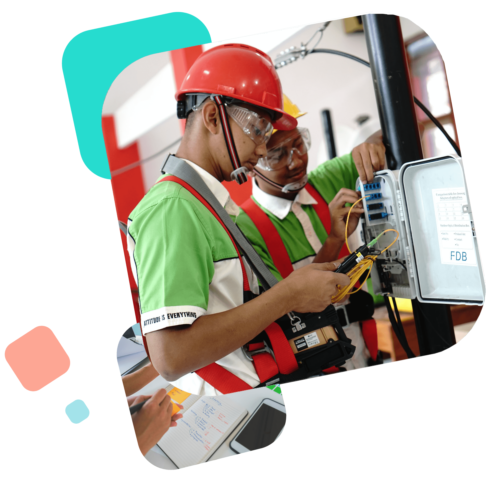

|  |
Teknik Komputer Jaringan (TKJ) |
|
Mempelajari cara merakit, instalasi, dan perbaikan komputer,
instalasi jaringan Local Area Network (LAN) dan Wide Area Network (WAN), serta internet of
things (IoT).
|
| Jaringan Kabel & Nirkabel
|
| Siswa nantinya akan belajar dan dituntut untuk bisa membangun jaringan berskala kecil hingga
besar dengan peralatan jaringan seperti cisco, mikrotik, access-point, switch, dll. |
| Administrasi Server |
|
Siswa nantinya akan belajar dan dituntut untuk bisa menginstalasi sebuah server beserta
konfigurasinya dengan basis linux. Konfigurasinya meliputi web server, FTP server, mail server,
proxy server, DNS server, database server, dll, serta juga mempelajari cloud computing dan cyber
security.
|
| Kesempatan Kerja |
|
Lulusan TKJ banyak bekerja pada posisi network designer, network engineer, network operating
center (NOC), DevOps, dan berwirausaha dibidang IT.
|